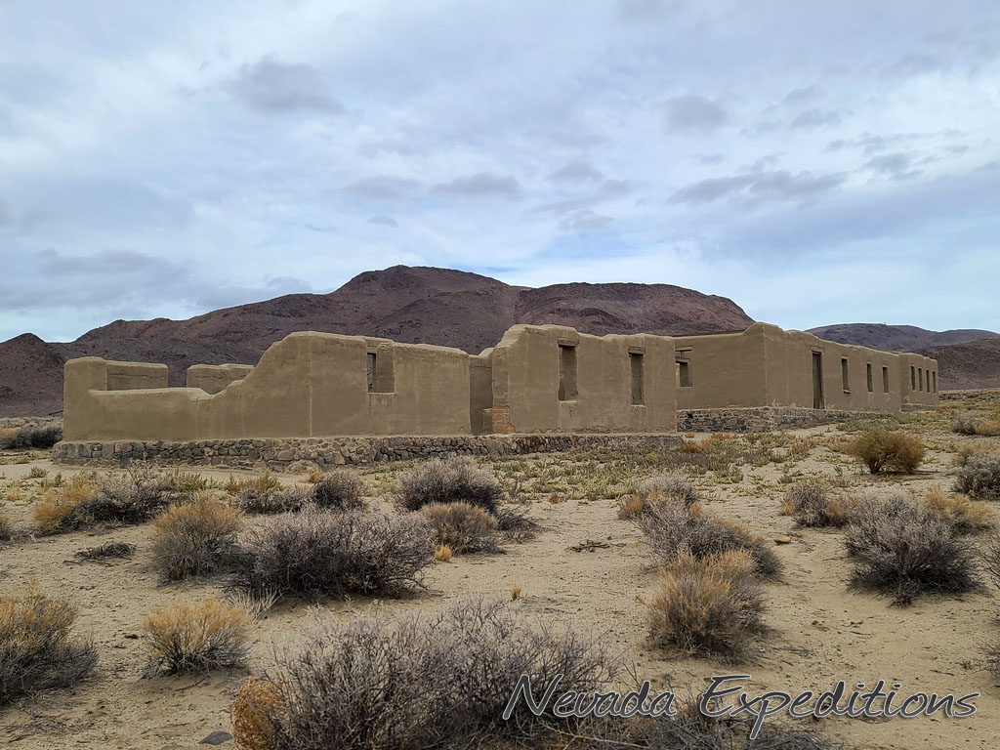
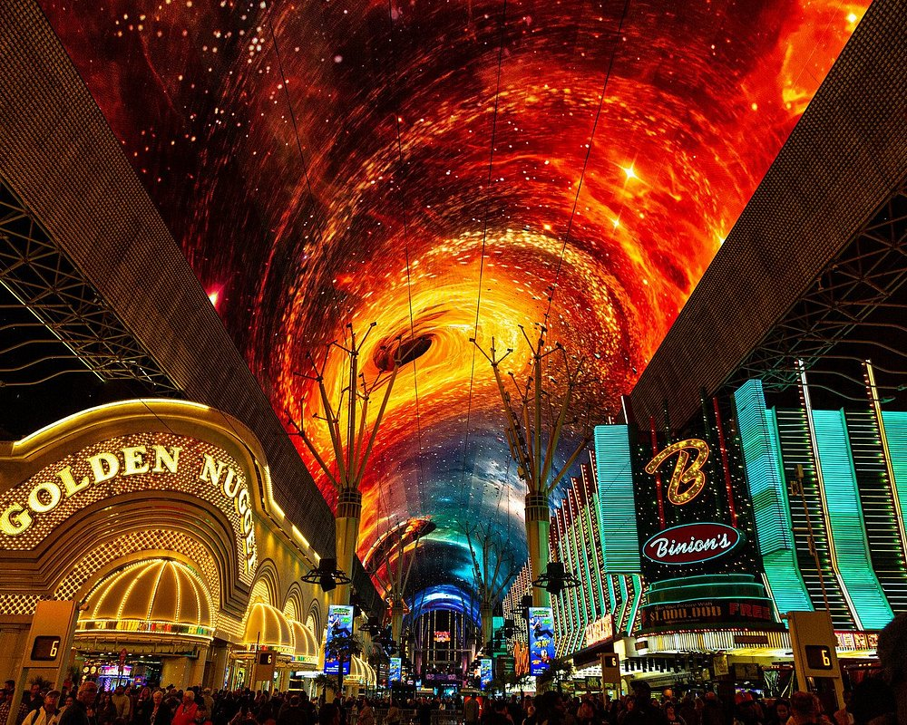

Historical places
Hoover Dam

Hoover Dam is not only a triumph of engineering but also a place filled with stories, artistry, and a touch of mystery. Originally known as Boulder Dam, the name sparked political debate for years until “Hoover Dam” was officially restored in 1947. While most visitors see it as a massive wall of concrete, many are surprised to discover its Art Deco flair. From terrazzo floors to intricate bronze doors and the striking Winged Figures of the Republic that stand guard nearby, the dam reflects the bold style of the 1930s as much as it does industrial strength. The construction of this giant project also gave birth to Boulder City, a planned town for workers and their families. Unlike the rowdy camps common on other big projects of the era, Boulder City had schools, parks, and even a hospital—but gambling and alcohol were strictly forbidden. Life in the desert was grueling; summer heat often soared above 120°F, forcing crews to invent special water-cooled suits just to survive while handling concrete and explosives in the canyon.
Virginia City

The people who lived here were as fascinating as the mines themselves. Millionaires built lavish mansions on “Millionaires’ Row,” while saloons—reportedly over a hundred of them—buzzed day and night with miners, politicians, and entertainers. Colorful figures like the eccentric mining baron John Mackay and silver king George Hearst left legacies that shaped Nevada’s identity. Even after the mining boom faded, the town’s reputation for grit and drama endured, inspiring countless Western tales and legends. Today, Virginia City still carries an aura of the unexpected. Its hillside cemeteries, old churches, and creaking saloon doors whisper of a past where fortunes were made and lost overnight. For those who step into its streets, the town offers not just history, but the feeling of stepping into another era where every corner has a story.
Nevada State Museum

The mint first opened its doors in 1870, striking coins from silver pulled directly from the Comstock Lode. Some of the rarest U.S. coins, like the Carson City Morgan silver dollars, were produced within its walls. Today, visitors can still see the massive Coin Press No. 1 in action, a machine that continues to mint commemorative medallions more than 150 years after it was first installed. Walking through the museum feels like stepping back into the era when Nevada’s silver shaped the nation’s economy. But the museum tells far more than a mining story. Its underground mine exhibit recreates the dangerous, claustrophobic conditions miners faced while working deep below the surface, giving visitors a visceral sense of frontier life. Beyond mining, the museum also explores Nevada’s vast natural world, from Ice Age creatures like the Columbian mammoth to the unique desert ecosystems that thrive today.
Fort Churchill State Historic Park
Fort Churchill State Historic Park is more than just a cluster of adobe ruins—it’s a place where history, nature, and legend intertwine. Built during a turbulent chapter of Nevada’s past, the fort once served as a lifeline for wagon trains heading west and a safeguard for the vital Pony Express and Overland Mail routes. Though abandoned by the military in the late 1860s, its walls still stand as a hauntingly beautiful reminder of the frontier. The park doesn’t just preserve the fort; it also protects the surrounding river ecosystem. The Carson River meanders through the area, creating a ribbon of green that attracts wildlife and offers a striking contrast to the desert landscape. Birdwatchers are often rewarded with sightings of herons, hawks, and even bald eagles, while the quiet trails provide a serene setting for hiking, horseback riding, and photography.
Fremont street
Fremont Street is located in downtown Las Vegas, Nevada, and is considered the second most well-known street in both the Las Vegas Valley and the state, after the famous Las Vegas Strip. It is named after explorer and politician John C. Frémont and sits at the center of the downtown casino district.The main feature is a barrel-vaulted canopy that reaches 90 feet (27 meters) at its highest point and stretches across four blocks, covering roughly 1,375 feet (419 meters) in length.Although Las Vegas is famous for keeping the exterior lights of its casinos on all night, each show begins by turning off the lights on every building beneath the canopy. For safety, one two-way street that intersects the Fremont Street Experience is closed off before each performance. Live concerts, often free of charge, take place on three stages throughout the venue. The area has grown into a major tourist destination in downtown Las Vegas and is home to the SlotZilla zip line as well as the city’s annual New Year’s Eve festivities.